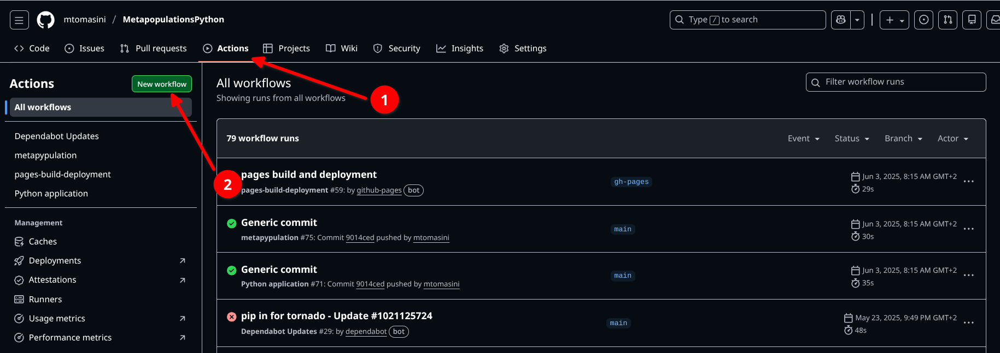
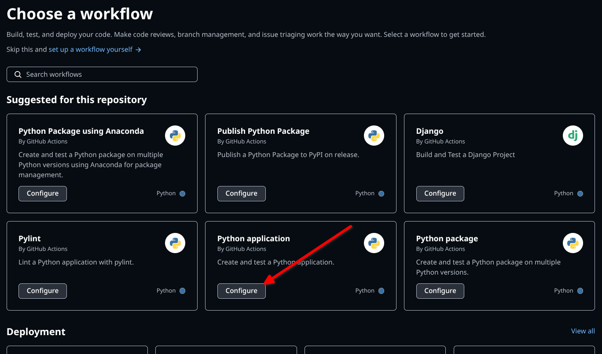

Run tests and build documentation automatically with GitHub Actions.
Continuous integration (CI) refers to the process of automating tasks pertaining to the integration of changes and new features into existing software. The automatization process can be setup for different tasks such as building a software, testing, generating documentation, or producing accessible outputs deriving from the codebase. One notable aspect of CI is that they can be triggered by changes in the codebase, which can effectively automate one’s testing environment and documentation-writing processes, ensuring robust software development.
There are several CI tools that can be used, one of the most accessible is Github Actions (but do check out GitLab CI if you work on Gitlab). CI pipelines can also be run locally, specifically to deal with tasks that depend on several pieces of code that are connected in complicated ways. We’ve written a brief introduction to GitHub Actions to help get you started:
NoteUsing Github Actions
Github Actions come in different flavors and can do many different things: for example, if you have setup a website using Github Pages, Github runs actions “under the hood” to build the website after each change committed. But Github Actions can be set-up for our own projects too. There is a whole marketplace of actions to choose from.
By setting up the correct Github Action (or whatever other tool you are using – here we stick with the Github example for clarity), a series of steps is executed everytime the code is pushed to a Github repository. In case of steps that might break something, it is also possible to create Github Actions when a branch is merged, and this can be paired with branch protection rules to stop merges that would break the code.
To set up an automatic Github action, one needs to go in the repository of the project and click on Actions, then click on “New Workflow”.

Then, select the action you would like to set up. As an example, to set up automated testing on a Python software, you would choose “Python Application”.

This will create a yaml script in a .github/workflows folder, that can be modified to correspond to one’s own needs. One of the most straightforward ways to use Github Actions is to use it so that tests are run everytime you push a code (see section about testing, above), instead of having to run tests manually. For example, in the following file, the Github Action will perform three actions in order to test a code written in Python:
# This workflow will install Python dependencies, run tests and lint with a single version of Python# For more information see: https://docs.github.com/en/actions/automating-builds-and-tests/building-and-testing-pythonname: Python applicationon:push:branches:["main"]pull_request:branches:["main"]permissions:contents: readjobs:build:runs-on: ubuntu-lateststeps:-uses: actions/checkout@v4-name: Set up Python 3.121uses: actions/setup-python@v3with:python-version:"3.12"-name: Install dependencies run: | python -m pip install --upgrade pip pip install flake8 pytest pytest-cov if [ -f requirements.txt ]; then pip install -r requirements.txt; fi-name: Lint with flake8 run: | # stop the build if there are Python syntax errors or undefined names 2 flake8 . --count --select=E9,F63,F7,F82 --show-source --statistics # exit-zero treats all errors as warnings. The GitHub editor is 127 chars wide flake8 . --count --exit-zero --max-complexity=10 --max-line-length=127 --statistics-name: Test with pytest and calculate coverage run: |3 pytest --cov-report "xml:coverage.xml" --cov=.-name: Create coverageif: ${{ github.event_name == 'pull_request' }}uses: orgoro/coverage@v3with:coverageFile: coverage.xmltoken: ${{ secrets.GITHUB_TOKEN }}
1
setting up the Python environment and installing the dependencies to run the Python application (necessitates a requirements.txt file in the directory),
2
linting
3
testing using the functions defined by the user – this last action also generates a test coverage report. Note that you still need to write the tests yourself!
Another way to use Github Actions is to have it (re-)deploy a webpage to the hosting domain everytime the code is pushed. This is something that happens automatically when setting up a Github Pages – Github provides a default Github Action in this case. For example, to deploy the documentation generated with Sphinx on the user’s Github Pages instance (see section about documentation), one could use a code like the following:
Additionally, CI is useful for orchestrating the interaction of different pieces of a codebase. This supports the superior practice of writing different pieces of code dealing with different functions, rather than writing one large program that calls different functions in sequence. Imagine, for example, that you have an analysis composed of different steps, each steps producing the input for the next step. In certain situations you will want all steps to run in sequence, but in other situations you would like only certain steps to run (e.g. because other steps have been run previously and need no re-running). Make ensures that each component operates in a manner that corresponds with your instructions.
This is typically accomplishing using GNU Make, a tool that controls how a software will run from a series of source code files. To do this, one can use a makefile, a file that dictates how different pieces of a pipeline interact. While Make is typically operating on languages that need building (think C and C++), other languages have their own tools doing the same thing, such as Snakemake (for Python) and the library MakefileR (for R).
For a distinctively archaeological perspective, consider reading Clemens Schmidt’s reflection on his use of Haskell’s version of Make (Shake) for his archaeoinformatics research.